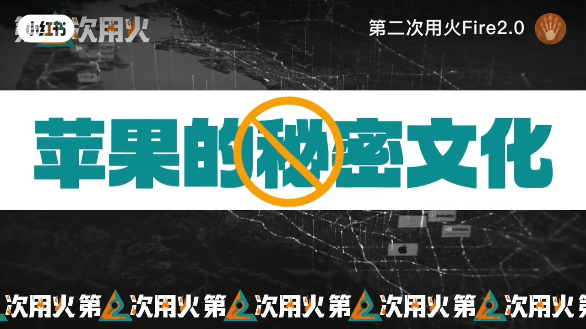
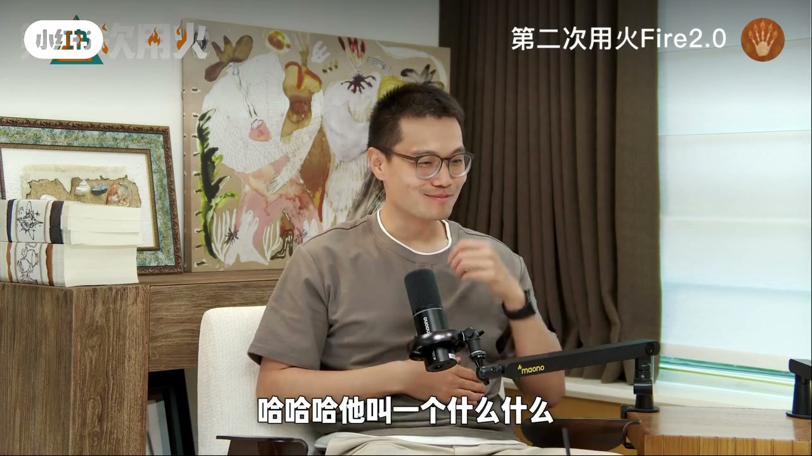
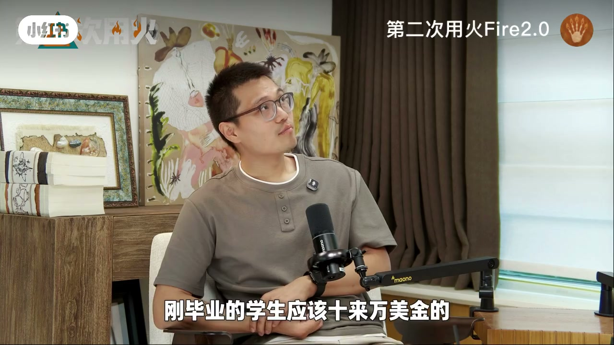

内容要点
知识结构
[00:00→00:50]
秘密文化
发布会驱动；折叠机等项目用代号，避免全员皆知。
[00:50→01:30]
协作与空间
同组不同项目可能不在同一会议；园区多小办公室，限制参观。
[01:30→02:33]
钱与金手铐
硅谷一线薪资；工作三年约27-28万美元；高薪让人难离开。
总结
苹果体验的核心差异常在保密与薪酬结构，而不一定是「技术神坛」。
图文实录
光环落地：普通公司+秘密文化
00:00 – 00:50
嘉宾称在苹果工作感觉是普通公司；最大特点是秘密文化。发布会驱动下，项目起代号（如阿波罗），避免「折叠手机项目」四个字人尽皆知。
苹果主要是秘密文化
他就会起一个代号阿波罗项目

[00:13]开场：年薪与秘密文化同时被提起
Opening: pay and secrecy culture come up together
[00:38]代号制：降低项目信息扩散
Codename system: reduce project information leakage
同组也可能互不知
00:50 – 01:30
秘密到同组都可能不知道同事做什么；同一项目才进同一会议。对比多数互联网开放式办公，苹果园区多小办公室，且不准随意带朋友参观。
我可能都不知道我的同事是做什么项目的
别的公司你基本上都是可以带人过去参观的，但是苹果是不可以的

[01:04]同组不同项目：会议与信息隔离
Same team, different projects: meeting and info isolation
[01:29]小办公室+限制参观：空间也服务保密
Small offices and limited tours: space serves secrecy
薪酬与金手铐
01:30 – 02:33
硅谷一线：应届约10万美金底薪加股票量级；嘉宾工作三年约二十七八万美元。金手铐：钱多了反而不舍得离开。提醒不能简单按人民币换算体感。
二十七八万个月
金手铐效应
就因为你挣了这么多钱了，你其实就被铐住了

[01:54]薪酬：硅谷一线水平的讨论
Compensation: discussion of top-tier Silicon Valley pay
[02:20]金手铐：高薪降低离开意愿
Golden handcuffs: high pay reduces willingness to leave